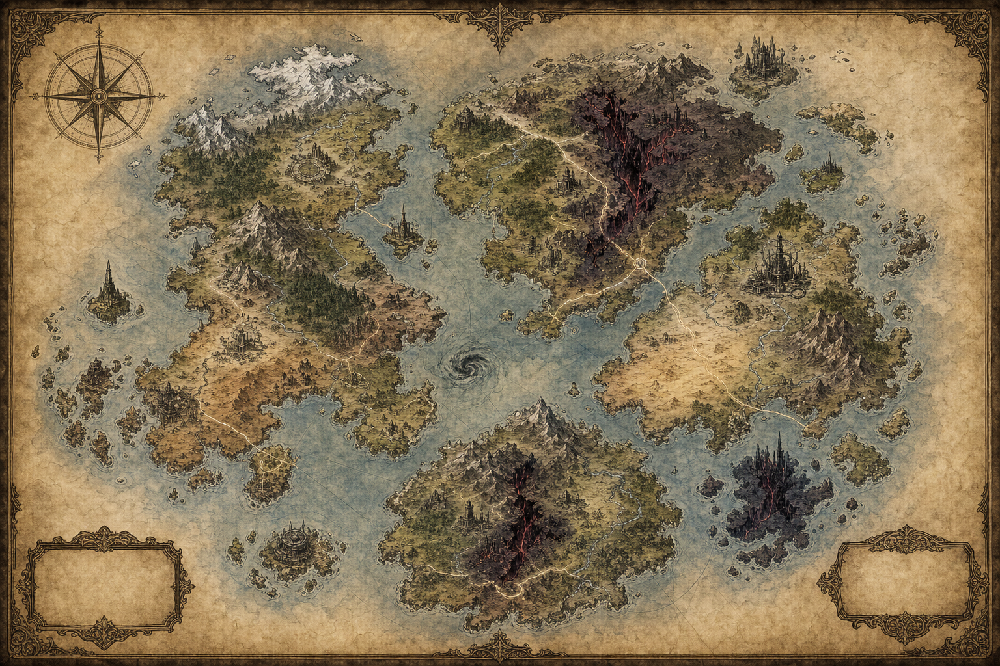

Como Usar Este Livro
Este volume é um suplemento de mesa para o Mestre. Ele não substitui o Livro de Regras nem o Bestiário: ele organiza procedimentos, opções e material novo para criar campanhas com mistério, exploração, entidades sombrias e custo moral.
Use as regras opcionais apenas quando reforçarem o tom da campanha. O Abismo funciona melhor quando é tentador, útil e perigoso: ele resolve problemas imediatos, mas sempre deixa uma sombra para depois.
Ferramentas do Mestre
Ciclo de Cena
Apresente pressão. Diga o que muda se os personagens demorarem. Peça escolhas. Cada cena deve oferecer risco, custo ou oportunidade. Mostre consequência. A mesa precisa sentir que o mundo reage.
CDs Rápidas
| Dificuldade | CD |
|---|---|
| Rotineira | 8 |
| Arriscada | 10 |
| Difícil | 12 |
| Heroica | 15 |
| Lendária | 18 |
Relógios
Use relógios de 4, 6 ou 8 segmentos. Avance 1 segmento em falha, demora, barulho ou custo aceito. Ao completar, a ameaça muda de estado: reforços chegam, ritual avança, fissura abre ou aliado é capturado.
Reação de Facções
| 2d6 | Resposta |
|---|---|
| 2-3 | Ataque ou traição imediata |
| 4-5 | Exigência dura |
| 6-8 | Negociação tensa |
| 9-10 | Ajuda com preço |
| 11-12 | Aliança temporária |
Nova Classe: Abismal
O Abismal é alguém que aprendeu a sobreviver ao Vão puxando força de tudo que sangra, teme, reza ou lembra. Sua magia é Dreno: uma técnica de roubo vital, pressão planar e pacto com entidades sombrias.
Dado de PV: d8 | Saves: ESP, VIG | Perícias: escolha 2 entre Intuição, Religião, Furtividade, Sobrevivência, Arcanismo, Intimidação e Medicina. Recurso: DN, pontos de Dreno.
Equipamento Inicial: brunea ou couro batido; adaga ritual ou foice curta; foco rachado; frasco de sangue seco; diário de sonhos; 10 OO.
| Nível | DN Máximo | Marcos |
|---|---|---|
| 1 | 9 | Dreno, Marca do Vazio |
| 2 | 9 | — |
| 3 | 10 | — |
| 4 | 10 | Melhoria de Atributo |
| 5 | 11 | Talento, Subclasse |
| 6 | 11 | — |
| 7 | 12 | — |
| 8 | 12 | Melhoria de Atributo |
| 9 | 13 | Talento, Característica de Subclasse |
| 10 | 13 | — |
| 11 | 14 | — |
| 12 | 14 | Melhoria de Atributo |
| 13 | 15 | Talento, Característica de Subclasse |
| 14 | 15 | — |
| 15 | 16 | — |
| 16 | 16 | Melhoria de Atributo |
| 17 | 17 | Talento, Característica de Subclasse |
| 18 | 17 | — |
| 19 | 18 | Melhoria de Atributo |
| 20 | 18 | — |
Características Fixas
Dreno. Você conjura habilidades de Dreno usando DN. Recupera 3 DN em descanso curto e todo DN em descanso longo. Se conjurar sem DN suficiente, pode marcar 1 Corrupção para pagar até 3 DN faltantes.
Corrupção. Cada Corrupção ativa impõe -1 em um tipo de teste definido pelo Mestre conforme a cena. Em descanso longo, remova 1 Corrupção se houver segurança, cuidado e confissão do custo pago.
Marca do Vazio. Como ação bônus, marque criatura visível em 12m por 1 minuto. Suas habilidades de Dreno interagem melhor com criaturas marcadas.
Pool de 40 Características — Abismal
| # | Característica | Efeito |
|---|---|---|
| 1 | Pulso de Dreno | Ao causar dano a uma criatura viva, gaste 1 DN para recuperar PV iguais ao Mod.ESP, limitado a uma vez por rodada. |
| 2 | Faro de Fenda | Detecta fissuras, corrupção abissal e criaturas drenadas em 18m com uma ação de concentração. |
| 3 | Sangue Escuro | Recebe +1 em testes contra veneno, doença e medo; quando falha, pode marcar 1 Corrupção para repetir. |
| 4 | Mão Sifonadora | Ataque desarmado ou toque causa 1d4 necrótico e pode puxar um objeto pequeno solto até você. |
| 5 | Reserva Faminta | Quando reduz inimigo a 0 PV, recupera 1 DN, até o limite de uma vez por cena. |
| 6 | Marca do Vazio | Como ação bônus, marca alvo em 12m por 1 minuto; sua primeira magia de Dreno contra ele recebe +1. |
| 7 | Respirar Ruína | Pode respirar em ar rarefeito, poeira, fumaça e zonas de fissura sem penalidade por 10 minutos. |
| 8 | Olhar de Pressão | Com ação, alvo em 9m faz ESP contra CD de Dreno ou sofre -1 no próximo ataque. |
| 9 | Pele de Abismo | Quando sem armadura pesada, ganha +1 Aparar contra o primeiro ataque de cada combate. |
| 10 | Cicatriz Canal | Durante descanso curto, converte até 2 PV em 1 DN cada; esses PV não podem ser curados até o fim do descanso. |
| 11 | Dreno Preciso | Nível 5+. Quando uma magia de Dreno causa dano, pode trocar 1 dado de dano por -3m deslocamento no alvo. |
| 12 | Eco Parasita | Nível 5+. Ao acertar alvo marcado, escolha: ele perde reação ou você ganha 1d6 PV temporários. |
| 13 | Vínculo Sombrio | Nível 5+. Vincula-se a um aliado em 9m; quando ele sofre dano, pode gastar 1 DN para reduzir 1d6. |
| 14 | Passo no Vão | Nível 5+. Move 3m através de sombra ou rachadura visível sem provocar reação, 1 vez por rodada. |
| 15 | Fome Controlada | Nível 5+. A primeira Corrupção marcada em cada sessão não impõe penalidade imediata. |
| 16 | Lâmina de Ausência | Nível 5+. Arma empunhada causa +1 dano necrótico contra alvos com menos da metade dos PV. |
| 17 | Defesa Sifonada | Nível 5+. Como reação, gaste 2 DN para reduzir dano recebido em 1d8 + Mod.ESP. |
| 18 | Presságio Oco | Nível 5+. Uma vez por cena, pergunte ao Mestre qual inimigo está mais vulnerável a controle, fuga ou negociação. |
| 19 | Sussurro de Entidade | Nível 5+. Ganha vantagem em um teste social contra criatura corrompida ou pactuada, mas ela reconhece sua marca. |
| 20 | Apetite Seletivo | Nível 5+. Suas magias de Dreno não ferem aliados escolhidos quando o efeito for área curta. |
| 21 | Canal Profundo | Nível 10+. Seu limite máximo de DN aumenta em 2. |
| 22 | Roubar Fôlego | Nível 10+. Ao causar dano de Dreno, alvo faz VIG ou não pode correr até o fim do próximo turno. |
| 23 | Negar Cura | Nível 10+. Quando fere alvo marcado, pode gastar 2 DN para reduzir a próxima cura dele pela metade. |
| 24 | Manto de Fissura | Nível 10+. Por 1 minuto, luz fraca ao redor de você vira penumbra e ataques à distância sofrem -1 contra você. |
| 25 | Memória Roubada | Nível 10+. Ao drenar criatura inteligente, aprende uma impressão útil: medo, rota, senha ou nome relevante. |
| 26 | Nervo de Ferro Negro | Nível 10+. Imune a Abalado enquanto tiver ao menos 1 DN disponível. |
| 27 | Dreno em Cadeia | Nível 10+. Uma vez por rodada, quando magia de Dreno derruba alvo, outro alvo em 3m sofre 1d6 necrótico. |
| 28 | Âncora Abissal | Nível 10+. Cria ponto fixo por 1 minuto; criaturas hostis em 3m gastam +1,5m para sair da área. |
| 29 | Preço Transferido | Nível 10+. Quando marcaria Corrupção, pode transferir a manifestação visual para um item carregado. |
| 30 | Olho Entre Mundos | Nível 10+. Enxerga invisível, etéreo ou oculto por fissura em 9m por 1 minuto, 1 vez por descanso curto. |
| 31 | Coração de Abismo | Nível 15+. Resistência a dano necrótico e psíquico; se já tiver resistência, reduz +2. |
| 32 | Forma Oca | Nível 15+. 1 vez por descanso longo, torna-se parcialmente vazio por 1 minuto: atravessa frestas e ignora terreno difícil. |
| 33 | Dívida da Entidade | Nível 15+. Chama uma entidade sombria para repetir uma rolagem falha; depois o Mestre cria uma cobrança futura. |
| 34 | Sifão Maior | Nível 15+. Ao drenar chefe ou criatura Grau 4+, recupera 2 DN e remove uma condição leve de si. |
| 35 | Zona Faminta | Nível 15+. Área de 6m por 1 minuto; inimigos que iniciam turno nela perdem 1 PV temporário ou sofrem -1 em cura. |
| 36 | Apagar Presença | Nível 15+. Por 10 minutos, criaturas sem visão especial têm desvantagem para rastrear você por som, cheiro ou magia fraca. |
| 37 | Tributo de Sangue | Nível 15+. Pode pagar 5 PV para reduzir custo de uma magia de Dreno em 2 DN, mínimo 1. |
| 38 | Vazio Obediente | Nível 15+. Quando alvo falha por 5+ contra sua CD de Dreno, você escolhe também empurrar, derrubar ou silenciar 1 rodada. |
| 39 | Avatar do Poço | Nível 17+. 1 vez por descanso longo, por 1 minuto, suas magias de Dreno custam -1 DN e causam +1d6. |
| 40 | Nome Perdido | Nível 17+. Uma vez por campanha, apaga seu rastro de uma entidade, juramento ou maldição, mas perde uma lembrança importante. |
Três Subclasses Abismais
Sifonista de Almas
Especialista em controle de recursos, cura roubada e punição contra conjuradores.
| Nível | Característica | Efeito |
|---|---|---|
| 5 | Coleta Espiritual | Quando uma criatura marcada gasta recurso mágico, você ganha 1 PV temporário por ponto gasto. |
| 9 | Dreno Reverso | Como reação, reduza cura inimiga em 1d8 e cure aliado em 9m pelo mesmo valor. |
| 13 | Reservatório de Ecos | Seu máximo de DN aumenta em 3; ao iniciar combate sem DN, recupera 2. |
| 17 | Colheita Perfeita | Uma vez por descanso longo, uma magia de Dreno que derruba alvo recupera metade do custo gasto. |
Flagelante do Vazio
Linha de frente resistente, feita para pagar PV, segurar corredores e transformar dor em dano.
| Nível | Característica | Efeito |
|---|---|---|
| 5 | Dor Alimenta | Quando sofre 10+ dano em uma rodada, seu próximo ataque causa +1d6 necrótico. |
| 9 | Armadura de Fissura | Gaste 2 DN para ganhar resistência ao próximo dano físico e necrótico até seu turno. |
| 13 | Corrente no Osso | Alvos que você marca têm -3m deslocamento enquanto estiverem em 6m de você. |
| 17 | Mártir Abissal | Uma vez por descanso longo, ao cair a 0 PV, fica com 1 PV e libera pulso de 6d6 necrótico em inimigos adjacentes. |
Oráculo da Fenda
Especialista em informação, presságios, rotas impossíveis e manipulação de cena.
| Nível | Característica | Efeito |
|---|---|---|
| 5 | Pergunta ao Fundo | Uma vez por cena, pergunte ao Mestre por uma ameaça oculta, custo provável ou rota segura. |
| 9 | Fenda Antecipada | Quando rola iniciativa, escolha um aliado; ele pode mover 3m antes do primeiro turno. |
| 13 | Mapa de Rupturas | Durante exploração, encontra uma passagem, atalho ou fraqueza estrutural se ela existir. |
| 17 | Profecia do Poço | Uma vez por sessão, declare uma condição futura plausível; quando acontecer, um aliado trata a rolagem como Aumento. |
Magia de Dreno — 40 Habilidades
A magia de Dreno é mecânica, não apenas narrativa: ela rouba cura, reduz recursos, converte dano em PV temporário, prende movimento, interfere em concentração e abre zonas perigosas.
| # | Habilidade de Dreno | Custo | Alcance / Duração | Tipo | Efeito |
|---|---|---|---|---|---|
| 1 | Mordida do Vão | 1 DN | 9m / Instantâneo | Ataque | 1 alvo sofre 1d6+Mod.ESP necrótico; se já estiver ferido, você ganha 1 PV temporário. |
| 2 | Sopro Seco | 1 DN | Cone 3m / Instantâneo | Controle | Criaturas fazem VIG CD 12 ou perdem reação até o início do seu próximo turno. |
| 3 | Toque de Débito | 2 DN | Toque / Instantâneo | Debuff | Causa 1d8 necrótico e reduz a próxima cura recebida pelo alvo em 1d6. |
| 4 | Roubar Calor | 2 DN | 12m / Instantâneo | Controle | Dano 1d6 frio/necrótico e alvo perde 3m de deslocamento em falha de VIG. |
| 5 | Fio de Sombra | 2 DN | 12m / 1 rodada | Dreno | Liga você ao alvo; o primeiro dano que você causar nele cura você em 1d6. |
| 6 | Olho Faminto | 1 DN | 18m / 1 minuto | Utilitário | Revela qual criatura visível tem menos PV atuais e qual tem recurso mágico ativo. |
| 7 | Pele Roubada | 3 DN | Pessoal / 1 minuto | Proteção | Ganha 2d6 PV temporários; enquanto durarem, recebe +1 contra medo. |
| 8 | Lacrar Fôlego | 3 DN | 9m / 1 rodada | Controle | Alvo faz VIG CD 13 ou não pode correr, gritar nem conjurar verbalmente por 1 rodada. |
| 9 | Dreno de Aura | 3 DN | 12m / Instantâneo | Dreno | Remove 1 bônus mágico leve do alvo; se remover, você recupera 1 DN. |
| 10 | Unha do Poço | 3 DN | 15m / Instantâneo | Ataque | Ataque mágico causa 2d6+Mod.ESP necrótico; Aumento deixa alvo Marcado. |
| 11 | Silêncio de Sangue | 4 DN | Área 4,5m / 1 minuto | Zona | Curas feitas na área curam -1d6; criaturas podem sair com AGI CD 13. |
| 12 | Corrente Abissal | 4 DN | 12m / 1 minuto | Controle | Alvo faz FOR ou fica preso; pode repetir no fim do turno. Você sente a direção dele. |
| 13 | Devolver Ferida | 4 DN | Pessoal / Reação | Reação | Ao sofrer dano, reduza 2d6 e cause metade do valor reduzido ao agressor em 9m. |
| 14 | Boca na Sombra | 4 DN | 18m / 1 minuto | Controle | Cria boca sombria que ameaça área de 3m; inimigos têm -1 em concentração ali. |
| 15 | Beber Memória | 5 DN | Toque / Instantâneo | Utilitário | Alvo ferido faz ESP CD 14 ou você descobre uma lembrança tática recente. |
| 16 | Pulso Hemático | 5 DN | 9m raio / Instantâneo | Dreno | Inimigos feridos sofrem 2d6 necrótico; você distribui 1d6 PV temporários a aliados. |
| 17 | Apagar Dor | 5 DN | Toque / Instantâneo | Suporte | Remove Abalado, Assustado ou Sangramento de aliado; você marca 1 Corrupção se remover condição grave. |
| 18 | Vazar Sorte | 5 DN | 12m / 1 rodada | Debuff | Alvo faz ESP; em falha, rola o próximo ataque com desvantagem e você ganha +1d4 no seu. |
| 19 | Nó de Fissura | 6 DN | 18m / 1 minuto | Zona | Área de 6m vira terreno difícil; criaturas feridas que entram sofrem 1d6 necrótico. |
| 20 | Selo de Inanição | 6 DN | 12m / 1 minuto | Debuff | Alvo marcado não recupera recursos mágicos e cura metade até vencer DEV CD 15. |
| 21 | Manto do Afogado | 6 DN | Pessoal / 10 minutos | Utilitário | Você não precisa respirar e atravessa água, lama e fumaça sem penalidade. |
| 22 | Dreno Duplo | 7 DN | 15m / Instantâneo | Dreno | Dois alvos sofrem 3d6 necrótico; se ambos falharem em VIG, recupere 1 DN. |
| 23 | Estilhaço de Nome | 7 DN | 18m / Instantâneo | Ataque | Dano 3d6 psíquico; se souber o nome do alvo, ele também perde reação. |
| 24 | Pacto de Sobrevida | 7 DN | Toque / 1 hora | Suporte | Aliado a 0 PV volta com 1 PV; você perde 1 dado de vida até descanso longo. |
| 25 | Buraco no Mundo | 8 DN | Área 3m / 1 rodada | Zona | Abre fenda curta; criaturas fazem AGI CD 15 ou caem e sofrem 4d6 impacto/necrótico. |
| 26 | Roubar Milagre | 8 DN | 18m / Reação | Reação | Quando inimigo conjura cura ou proteção, reduza o efeito em 2d6 e ganhe PV temporários iguais. |
| 27 | Coro de Entidades | 8 DN | 9m raio / 1 minuto | Controle | Inimigos fazem ESP CD 15 ou não podem receber vantagem; aliados ouvem avisos e ganham +1 Percepção. |
| 28 | Sangrar o Chão | 9 DN | Área 6m / 1 minuto | Zona | Terreno drena energia; inimigos sofrem 1d6 ao iniciar turno e curas ali custam ação completa. |
| 29 | Eclipse Interno | 9 DN | 12m / 1 rodada | Controle | Alvo faz ESP CD 16 ou fica Cego e Silenciado por 1 rodada; sucesso aplica só uma condição. |
| 30 | Fome Maior | 9 DN | 18m / Instantâneo | Dreno | Causa 5d6 necrótico em alvo ferido; se derrubar, remove uma condição sua. |
| 31 | Atravessar a Falha | 10 DN | Pessoal / Instantâneo | Movimento | Teleporta até 18m entre sombras, rachaduras ou sangue derramado visível. |
| 32 | Coração Emprestado | 10 DN | Toque / 1 minuto | Proteção | Aliado ganha 5d6 PV temporários e resistência a necrótico; ao fim, sofre 1 Exaustão leve. |
| 33 | Maldição de Esvaziar | 10 DN | 18m / 1 minuto | Debuff | Alvo faz DEV CD 16; em falha, perde 1 recurso por rodada ou sofre 2d6 psíquico. |
| 34 | Mandíbula do Abismo | 11 DN | 24m / Instantâneo | Ataque | Ataque em linha causa 6d6 necrótico; VIG reduz metade e evita ser puxado 6m. |
| 35 | Nome ao Poço | 11 DN | 18m / 10 minutos | Controle | Enquanto souber o nome do alvo, ele não pode se ocultar de você por meios mundanos. |
| 36 | Vazio Compartilhado | 12 DN | 9m raio / 1 minuto | Suporte | Você e aliados escolhidos dividem PV temporários e podem transferir 1d6 dano entre si por rodada. |
| 37 | Exílio Breve | 12 DN | 12m / 1 rodada | Controle | Alvo faz ESP CD 17 ou desaparece no Vão por 1 rodada, retornando caído no mesmo espaço livre. |
| 38 | Dreno Absoluto | 13 DN | 18m / Instantâneo | Dreno | Causa 8d6 necrótico; metade do dano final vira cura para você ou aliado em 9m. |
| 39 | Portão Faminto | 14 DN | Área 9m / 1 minuto | Zona | Fenda maior; inimigos que usam magia ali sofrem 2d6 e devem testar concentração. |
| 40 | Banquete do Poço | 15 DN | 18m / 1 minuto | Dreno | Até 3 alvos marcados sofrem 6d6; para cada alvo que falhar, você recupera 1 DN ou remove uma condição. |
Subclasses Abissais Para as Outras Classes
Cada classe do Livro de Regras recebe uma opção ligada a entidades sombrias. Elas devem ser escolhidas no nível 5 como qualquer subclasse e concedem características nos níveis 5, 9, 13 e 17.
Opções por Classe
Guerreiro: Jurado da Fenda
Duelista ou guardião que fez juramento a uma entidade soterrada.
| Nível | Característica | Efeito |
|---|---|---|
| 5 | Golpe de Fissura | Ao gastar AU, cause +1d6 necrótico e marque o alvo até o fim do próximo turno. |
| 9 | Escudo do Juramento Escuro | Aliados adjacentes recebem +1 Aparar contra criaturas marcadas por você. |
| 13 | Marcha do Poço | Ignora terreno difícil criado por sombra, ruína, sangue ou fissura. |
| 17 | Campeão da Entidade | Uma vez por descanso longo, por 1 minuto, todo Aumento seu impõe Assustado ou Caído. |
Arcanista: Geômetra Abissal
Estuda ângulos impossíveis e transforma runas em rachaduras controladas.
| Nível | Característica | Efeito |
|---|---|---|
| 5 | Runa de Falha | Uma runa sua pode impor -1 no próximo save do alvo contra magia. |
| 9 | Círculo Invertido | Ao preparar ritual, escolha: reduzir custo em 1 PA ou esconder o efeito de detecção comum. |
| 13 | Linha Não Euclidiana | Uma vez por cena, magia em linha pode dobrar uma esquina visível. |
| 17 | Teorema do Vão | Uma vez por descanso longo, converta falha crítica de magia em sucesso com Corrupção narrativa. |
Sensiente: Eco do Vazio
Transforma emoções em ausência, silêncio e fome emocional.
| Nível | Característica | Efeito |
|---|---|---|
| 5 | Estado Oco | Ao trocar estado emocional, pode escolher Oco por 1 rodada: +1 contra medo e charme. |
| 9 | Empatia Negativa | Quando lê emoção dominante, também descobre o que o alvo não consegue sentir. |
| 13 | Catarse Silenciosa | Sua Catarse pode causar psíquico/necrótico e impedir reação dos alvos em falha. |
| 17 | Ausência Viva | Uma vez por cena, quando seria controlado emocionalmente, reflete a condição para a origem. |
Devoto: Herege do Abismo
Canaliza fé por meio de uma entidade que responde com milagres famintos.
| Nível | Característica | Efeito |
|---|---|---|
| 5 | Canalizar Heresia | Canalizar Divindade pode drenar 1d6 PV de inimigo em 9m e curar aliado no mesmo valor. |
| 9 | Dogma Partido | Magias de Fé contra criaturas sagradas, profanas ou pactuadas recebem +1 dano. |
| 13 | Liturgia Submersa | Rituais feitos em ruínas, cavernas ou noites sem lua custam -1 PD. |
| 17 | Santo Invertido | Uma vez por descanso longo, sua aura torna aliados resistentes a necrótico e inimigos vulneráveis à primeira cura negada. |
Artífice: Engenheiro de Fissura
Constrói dispositivos que armazenam vácuo, sombra e pressão planar.
| Nível | Característica | Efeito |
|---|---|---|
| 5 | Cristal Oco | Um dispositivo pode guardar 1 DN temporário que desaparece no descanso longo. |
| 9 | Motor de Pressão | Armadilhas suas empurram ou puxam 3m em falha além do efeito normal. |
| 13 | Golem de Fenda | Seu construto ganha resistência a necrótico e pode atravessar frestas largas. |
| 17 | Máquina do Limiar | Uma vez por sessão, cria aparelho instável que abre passagem curta ou sela fissura menor. |
Explorador: Cartógrafo Profundo
Rastreador de rotas abaixo do mundo, caçador de fissuras e túneis vivos.
| Nível | Característica | Efeito |
|---|---|---|
| 5 | Trilha Subterrânea | Em ruínas, cavernas ou cidades antigas, aliados ignoram a primeira penalidade de terreno por cena. |
| 9 | Marca de Profundidade | Alvo marcado não se beneficia de escuridão comum contra você. |
| 13 | Atalho Impossível | Uma vez por viagem, encontre rota perigosa porém rápida que corta metade do tempo. |
| 17 | Predador do Limiar | Contra criaturas abissais ou pactuadas, seu primeiro acerto no combate causa +2d6. |
Guia de Criação de Aventuras
Monte uma aventura em cinco passos: escolha uma promessa, defina uma ameaça, escolha três cenas obrigatórias, crie um relógio de pressão e prepare uma consequência que mude o mapa ou uma facção.
- Promessa: o que torna a sessão irresistível?
- Ameaça: quem ganha se os heróis não agirem?
- Cenas: investigação, travessia, confronto, escolha moral e resolução.
- Relógio: o que avança quando há falha ou demora?
- Consequência: o que permanece no mundo depois da aventura?
Chamado da Aventura
| d6 | Ideia |
|---|---|
| 1 | Uma cidade perde memórias a cada nascer do sol. |
| 2 | Uma mina encontra uma fissura que respira. |
| 3 | Uma entidade oferece cura em troca de nomes. |
| 4 | Um bestiário vivo foge de seu arquivo. |
| 5 | Um culto quer transformar uma ponte em portal. |
| 6 | Um aliado retorna diferente depois de morrer. |
Local Central
| d6 | Ideia |
|---|---|
| 1 | Mosteiro soterrado |
| 2 | Cidade sobre linha de força |
| 3 | Floresta que odeia fogo |
| 4 | Porto afogado |
| 5 | Deserto de ossos vitrificados |
| 6 | Distrito industrial arcano |
Complicação
| d6 | Ideia |
|---|---|
| 1 | O vilão está certo por motivos terríveis. |
| 2 | A recompensa é amaldiçoada. |
| 3 | Uma facção aliada quer segredo absoluto. |
| 4 | O tempo é contado por um relógio de ameaça. |
| 5 | Toda magia deixa rastro visível. |
| 6 | Salvar inocentes fortalece a entidade. |
Recompensa Estranha
| d6 | Ideia |
|---|---|
| 1 | Mapa para região ainda sem nome. |
| 2 | Cristal que armazena 1 recurso mágico. |
| 3 | Favor de uma entidade menor. |
| 4 | Arma com memória emocional. |
| 5 | Ritual para selar fissura pequena. |
| 6 | Uma verdade sobre a origem do mundo. |
Mapa-Múndi do RPG
Mapa inicial sem nomes oficiais, feito para receber regiões, nações, rotas e marcas de campanha depois. As cicatrizes vermelhas sugerem zonas de fissura abissal; os vazios e cartuchos foram deixados para anotações futuras.

Regras Opcionais Para Mestres
Perseguições Balanceadas
Use quando uma fuga for mais interessante que combate. Cada perseguição tem uma Distância de -3 a +3. Em -3, os perseguidores alcançam. Em +3, os fugitivos escapam. Comece em 0, ou +1 se os fugitivos prepararam a fuga.
| Passo | Procedimento |
|---|---|
| 1 | Cada lado escolhe líder e rola teste apropriado: AGI, FOR, Sobrevivência, Pilotagem, Furtividade ou Tecnologia. |
| 2 | Maior resultado desloca a Distância 1 passo a seu favor. Aumento desloca 2 passos. |
| 3 | Quem falha por 5+ sofre complicação: 1d6 dano, queda, item perdido, separação ou +1 segmento no relógio de ameaça. |
| 4 | A cada rodada depois da terceira, todos fazem VIG CD 10 + rodada ou sofrem -1 no próximo teste da perseguição. |
| 5 | Ações especiais: Atalho dá vantagem mas complica em falha; Bloqueio muda Distância 1 se vencer CD 12; Distração impõe -1 ao outro lado. |
Ferimentos Persistentes
Quando cair a 0 PV ou sofrer crítico narrativo, role VIG CD 12. Em falha, escolha ou role: cicatriz visível, -1 em movimento até tratamento, desvantagem em esforço fino, pesadelos, perda de item ou dívida com curandeiro.
Pechincha com Entidades
Uma entidade pode oferecer sucesso automático, informação verdadeira ou recurso recuperado. O preço deve ser concreto: nome, memória, favor, marca, inimigo alertado ou relógio avançado em 2 segmentos.
Exploração por Turnos
Em masmorras, ruínas e regiões hostis, cada turno de exploração dura 10 minutos. A cada turno, o grupo escolhe duas ações: avançar, procurar, descansar, mapear, forçar passagem, cobrir rastros ou ritualizar. Depois role encontro ou avance relógio.
Descanso Sob Pressão
Descanso curto em território hostil recupera apenas metade dos recursos normais se o grupo não gastar uma ação de exploração preparando abrigo. Descanso longo exige local seguro ou custo narrativo.
Horror Sem Tirar Agência
Medo, corrupção e abismo devem oferecer escolhas ruins, não remover o personagem da mão do jogador. Prefira: custo, tentação, informação incompleta, urgência, marca visível e dívida futura.